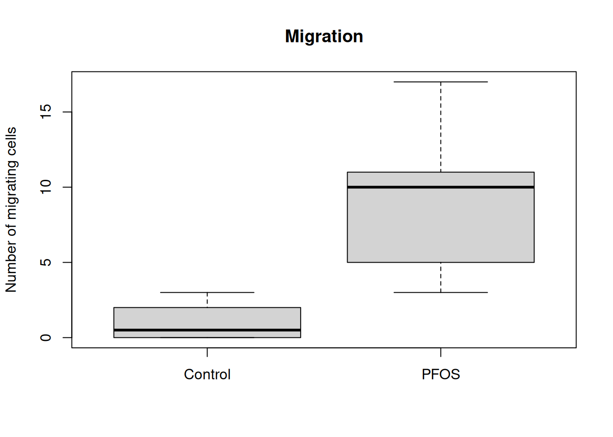
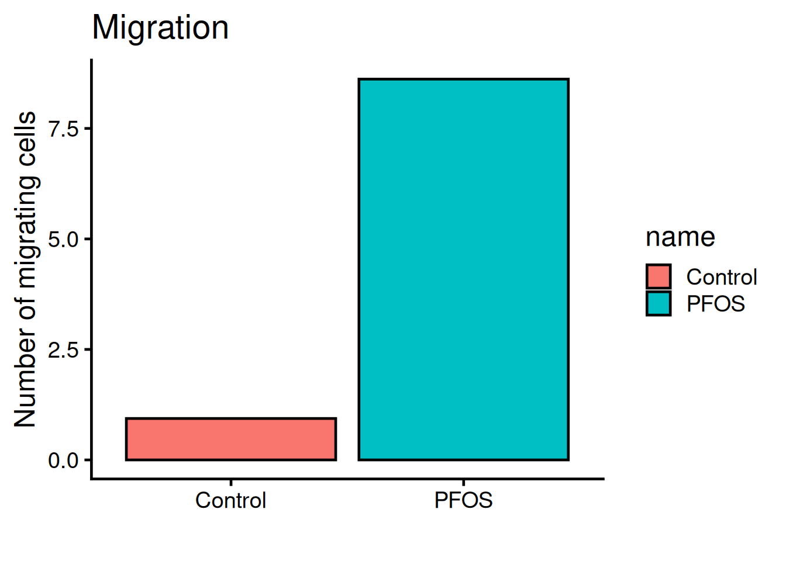
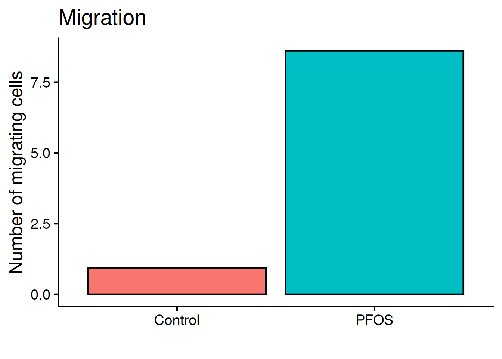
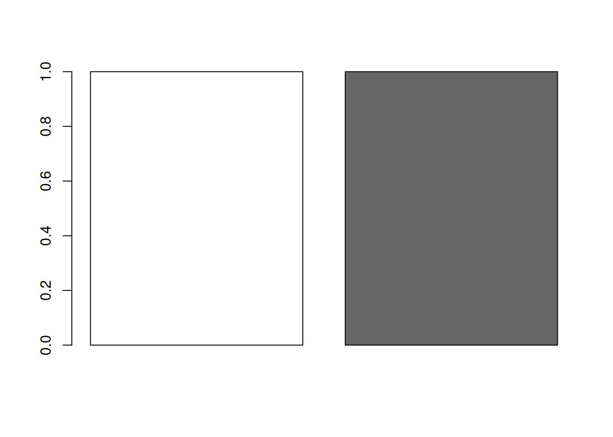

library(readr)
url <- "https://raw.githubusercontent.com/KarlssonLaboratory/mi8016-Research-Approaches/main/data/migration.csv"
# Import dataset
migration <- read_csv(url)T-test
Comparison between two group means
In the paper PFOS induces proliferation, cell-cycle progression, and malignant phenotype in human breast epithelial cells, 2018 (PFOS phenotype paper), the adverse effects of PFOS are tested on a human cell line (MCF-10F), in multiple doses and exposure times. The adverse effects were assessed by investigating phenotypes such as proliferation, invasion and migration.
Here, we will reproduce the statistics and the figure 3. This figure shows the cell migration (A) and cell invasion (B) phenotypes of 10 µM PFOS for 72 h. Cell migration and invasion are by quantifying the cell nuclei count with DAPI, a staining method.
TipCompare to the original
Keep the figure 3 open in a separate tab during the tutorial so can easily compare it to ours.
Important
All code are ran inside R. If you need to install R follow this tutorial.
Installing packages
We’ll be needing some basic packages to help us along the way. Install forcats, readr and ggplot2.
- 1
-
Install packages with
install.packages("<package-name>"), use quotes - 2
-
Load library with
library(<package-name>)
Import the data
Lets import the dataset of nuclei count. The dataset is found here. We will download it directly into R with the read_csv() function (readr packages)
Important
The rest of the tutorial will use the migration dataset. Since the setup of the invasion dataset is identical you can use the same code to analysis as well.
url <- "https://raw.githubusercontent.com/KarlssonLaboratory/mi8016-Research-Approaches/main/data/invasion.csv"
# Import dataset
invasion <- read_csv(url)Inspect the dataset with the head() and summary() functions:
1head(migration)- 1
-
head()shows the top 6 rows of the data frame
# A tibble: 6 × 2
name value
<chr> <dbl>
1 Control 0
2 Control 2
3 Control 2
4 Control 0
5 Control 0
6 Control 21summary(migration)- 1
-
summary()shows ranges and types for each column
name value
Length:32 Min. : 0.000
Class :character 1st Qu.: 0.000
Mode :character Median : 2.000
Mean : 4.379
3rd Qu.:10.000
Max. :17.000
NA's :3
TipWhat did you learn about the dataset?
The data frame is composed:
- 2 columns : named “name” and “value”.
- 3 values are NA’s.
To inspect the data frame fully, type the data frames name!
Use the forcats function fct_inorder() to make the name column in to factors (categorical) and in the order they appear.
library(forcats)
1migration$name <- fct_inorder(migration$name)- 1
-
forcats::fct_inordermakes the categorices of the column the order they appear.
Tip
What happens if you do not include migration$name <- in the code above, and only write fct_inorder(migration$name)?
Statistics
Lets compare the means of the observed values for PFOS and control. Since there are two groups being compared a student’s t-test is suffice.
The t.test() function runs a t-test and takes the arguments for each group. t.test() returns a named list, with its elements accessable via the dollar sign $ notation.
Run the t-test and check the results:
res <- t.test(formula = value ~ name, data = migration)
res
Welch Two Sample t-test
data: value by name
t = -6.3497, df = 13.221, p-value = 2.347e-05
alternative hypothesis: true difference in means between group Control and group PFOS is not equal to 0
95 percent confidence interval:
-10.285708 -5.070061
sample estimates:
mean in group Control mean in group PFOS
0.937500 8.615385 To single out the p-value run:
res$p.value[1] 2.346662e-05The result is very significant!
Lets make a simple plot!
The boxplot() function generates boxes for our two columns, migration$Control and migration$PFOS:
plot(x = migration$name, y = migration$value)
Tip
Try plot(migration) aswell, any difference?
The plot() function also takes in additional arguments, like main, ylab and xlab. This will help us make the plot more understandable.
plot(
migration,
1 main = "Migration",
ylab = "Number of migrating cells",
xlab = ""
)- 1
- main = plot title, ylab = text on y-axis, xlab = text on x-asis

TipFunction arguments
All functions in R comes with documentation, where the function and all the arguments the function takes in are described. To open the documentation use the question mark ? before the name of the function, like ?plot will show:
plot package:base R Documentation
Generic X-Y Plotting
Description:
Generic function for plotting of R objects.
For simple scatter plots, ‘plot.default’ will be used. However,
there are ‘plot’ methods for many R objects, including
‘function’s, ‘data.frame’s, ‘density’ objects, etc. Use
‘methods(plot)’ and the documentation for these. Most of these
methods are implemented using traditional graphics (the ‘graphics’
package), but this is not mandatory.
. . .To exit the documentation, press q.
Put a little flare on it
R comes with many packages to help customise plots. ggplot2 is the most popular one and builts on “layers” of geometic objects, called geom. The dataset is loaded via the ggplot() function and mapped via aesthetics (aes). Aesthetics contols x, y, outline colors, inside fill colors, sizes, shapes etc.
Tipggplot syntax
ggplot(<dataframe>, aes(x = <column_x_values>, y = <column_y_values>, colors = <column>)) +
geom_<layer> +
geom_<layer> +
geom_<layer> +
. . .Lets style the plot with ggplot2! Run the code below:
- 1
-
By adding a plus sign
+multiple rows are chained fo the plot. - 2
-
geom_bar()uses the mean to calculate the top part of the bar. - 3
-
theme_classic()is on of many themes for decorating a plot.base_sizesets the overall size. - 4
-
labs()holds arguments for text inputs for title, x-axis, y-axis, etc.

The legend is not needed, remove it with theme(legend.position = "none"):
ggplot(migration, aes(name, value, fill = name)) +
geom_bar(fun = "mean", stat = "summary", color = "black") +
theme_classic(base_size = 18) +
1 theme(legend.position = "none") +
labs(
title = "Migration",
x = "",
y = "Number of migrating cells")- 1
-
legend.positionis set to “none” and therefor not rendered. Default value islegend.position = "right".

We need to add “whiskers” to the plot, which shows mean +/- standard deviation, i.e the variance. Use geom_errorbar:
ggplot(migration, aes(name, value, fill = name)) +
geom_bar(fun = "mean", stat = "summary", color = "black") +
geom_errorbar(
stat = "summary",
1 fun.min = function(x) mean(x) - sd(x),
2 fun.max = function(x) mean(x) + sd(x),
3 width = 0.4) +
theme_classic(base_size = 18) +
theme(legend.position = "none") +
labs(
title = "Migration",
x = "",
y = "Number of migrating cells")- 1
- Bottom whisker
- 2
- Top whisker
- 3
- Width of whiskars

Color the bars according to the original figure.
Manually set the colors:
bar_colors <- c(
"white",
"grey40"
)
1barplot(rep(1, length(bar_colors)), col = bar_colors)- 1
- Inspect the colors with a box-plot

Put it all together!
ggplot(migration, aes(name, value, fill = name)) +
geom_bar(fun = "mean", stat = "summary", color = "black") +
geom_errorbar(
stat = "summary",
fun.min = function(x) mean(x) - sd(x),
fun.max = function(x) mean(x) + sd(x),
width = 0.4) +
1 scale_fill_manual(values = bar_colors) +
theme_classic(base_size = 18) +
theme(legend.position = "none") +
labs(
title = "Migration",
x = "",
y = "Number of migrating cells")- 1
- Set the fill colors manually